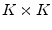
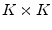

As the non-linear elements are still modeled in time domain, the circuit
first must be separated into a linear and a non-linear part. The
internal impedances  of the voltage sources are put into the
linear part as well. Figure 7.1 illustrates the
concept. Let us define the following symbols:
of the voltage sources are put into the
linear part as well. Figure 7.1 illustrates the
concept. Let us define the following symbols:
The linear circuit is modeled by two transadmittance matrices: The first one relates the source voltages to the interconnection currents and the second one relates the interconnection voltages to the interconnection currents . Taking both, we can express the current flowing through the interconnections between linear and non-linear subcircuit:
The non-linear circuit is modeled by its current function
and by the charge of its capacitances
.
These functions must be Fourier-transformed to give the
frequency-domain vectors
 and
,
respectively.
and
,
respectively.
A simulation result is found if the currents through the interconnections are the same for the linear and the non-linear subcircuit. This principle actually gave the harmonic balance simulation its name, because through the interconnections the currents of the linear and non-linear subcircuits have to be balanced at every harmonic frequency. To be precise the described method is called Kirchhoff's current law harmonic balance (KCL-HB). Theoretically, it would also be possible to use an algorithm that tries to balance the voltages at the subcircuit interconnections. But then the Z matrix (linear subcircuit) and current-dependend voltage laws (non-linear subcircuit) have to be used. That doesn't fit the need (see other simulation types).
So, the non-linear equation system that needs to be solved writes:
After each iteration step, the inverse Fourier transformation must
be applied to the voltage vector
. Then the time domain
voltages
are put into
and
again. Now, a Fourier transformation
gives the vectors
 and
for the
next iteration step. After repeating this several times, a simulation
result has hopefully be found.
and
for the
next iteration step. After repeating this several times, a simulation
result has hopefully be found.
Having found this result means having got the voltages at the interconnections of the two subcircuits. With these values the voltages at all nodes can be calculated: Forget about the non-linear subcircuit, put current sources at the former interconnections (using the calculated values) and perform a normal AC simulation. After that the simulation is complete.
A short note to the construction of the quantities: One big difference
between the HB and the conventional simulation types like a DC or an
AC simulation is the structure of the matrices and vectors. A vector
used in a conventional simulation contains one value for each node.
In an HB simulation there are many harmonics and thus, a vector contains
 values for each node. This means that within a matrix, there is a
 diagonal submatrix for each node. Using this structure,
all equations can be written in the usual way, i.e. without paying
attention to the special matrix and vector structure. In a computer
program, however, a special matrix class is needed in order to not
waste memory for the off-diagonal zeros.
values for each node. This means that within a matrix, there is a
 diagonal submatrix for each node. Using this structure,
all equations can be written in the usual way, i.e. without paying
attention to the special matrix and vector structure. In a computer
program, however, a special matrix class is needed in order to not
waste memory for the off-diagonal zeros.